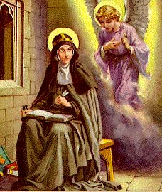
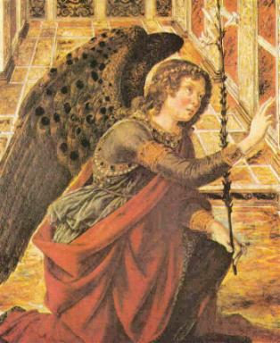
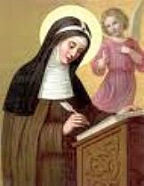
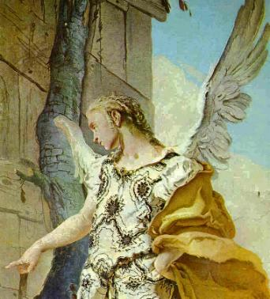
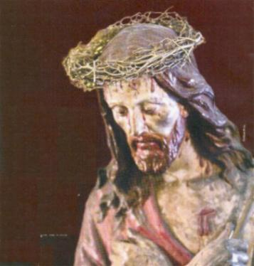
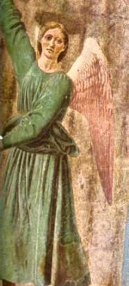
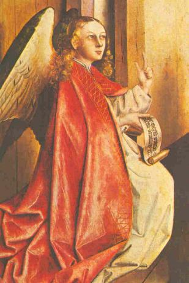
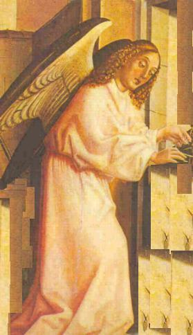

"DEUS SEMPRE AMOU MARIA"

O SENTIMENTO DA VIRGEM NA CONCEPÇÃO, NASCIMENTO, MORTE E GLORIOSA RESSURREIÇÃO DE SEU FILHO

Quinta-Feira ? Primeira Lição (Capítulo 13)
Nas três Lições seguintes o Anjo mostra como a VIRGEM MARIA se portava depois de ter o conhecimento de DEUS. Trata também da força de Sua Vontade que dominou todos os Seus sentidos. Focaliza ainda, a concepção e o glorioso nascimento do SENHOR do Mundo.
Bênção ? Sagrada VIRGEM das virgens interceda por nós diante do SENHOR. Amém.
O bendito
?Corpo de MARIA? pode muito bem ser comparado com um
?puríssimo vaso?; ?Sua Alma? pode ser 
Assim, como a Igreja diz que o FILHO DE DEUS saiu do PAI e voltou ao PAI, ainda que nenhum deles tenham se afastado Um do Outro, igualmente, os sentidos e a compreensão da VIRGEM, elevando-se com frequência ao mais alto dos Céus, via constantemente DEUS por meio da fé, e abraçada a ELE com dulcíssimo amor, suavemente voltava a Si mesma.
Manteve com a maior firmeza este amor com esperança racional e temor Divino, acendendo sua alma por meio do mesmo amor, de modo, que começou a arder como um veementíssimo fogo no Amor de DEUS. Os sentidos e a compreensão da VIRGEM também foram submetidos de tal maneira ao corpo e a alma para obedecer a DEUS, que desde então o Seu corpo era obediente com a maior humildade.
Com quanta rapidez os sentidos e o entendimento da VIRGEM compreenderam o Amor de DEUS! Com quanta prudência Ela pode se enriquecer com as virtudes! Imagine, transplantar um lírio, fixado a terra por três raízes, para que ficasse mais firme, e dele desabrochasse três preciosas flores. Do mesmo modo o Amor Divino derramado nesta ?gloriosa terra?, a nossa SANTÍSSIMA VIRGEM, por virtude Divina, se uniu a Seu corpo com três virtudes muito sólidas, como se fossem três raízes pelas quais ?fortaleceu o corpo da VIRGEM?. E também, com ?três jóias?, como se fossem três preciosíssimas flores adornou honorificamente a alma da VIRGEM, para alegria de DEUS, dos Anjos e de quantos a olhassem.
A ?primeira fortaleza? era a discreta abstinência do corpo da VIRGEM que fazia moderação da comida e da bebida, de modo, que por nenhuma coisa supérflua ou a menor preguiça, Ela nunca se afastou do serviço de DEUS, nem pela imoderada parcimônia, jamais resultava ficar sem forças para trabalhar. A ?segunda fortaleza? da sobriedade das vigílias, governava o seu corpo de tal maneira, que mesmo pelo pequeno repouso necessário, em nenhum tempo em que devia estar alerta se encontrava adormecida com pesadelo, ao contrário, acordava nos mais insignificantes períodos marcados pela vigília.
A ?terceira fortaleza? refere-se a robusta constituição do corpo da VIRGEM que fez tão constante a Sua virgindade que com igual ânimo enfrentava o trabalho, a adversidade corporal e a felicidade passageira do corpo, sem se queixar pela adversidade deste e sem se alegrar por sua felicidade. Esta era também a ?primeira jóia? com que o Amor Divino enfeitava à VIRGEM em relação a sua alma, a saber, que preferia em sua alma os prêmios que DEUS havia de conceder aos seus amigos, do que a beleza de todas as coisas, e por conseguinte, Lhe pareciam infames todas as riquezas do mundo. Enfeitava a sua alma como ?segunda jóia o discernimento perfeito? em sua compreensão vendo quão incomparável a glória do céu é a honra do mundo, pelo que se afastava de ouvir a glória mundana, considerando-a como ar corrompido, que com o seu fedor estimula a vaidade e destrói em breve a vida de muitos.
Como ?terceira jóia? que glorificava a alma da VIRGEM, era considerar meigas e gratas ao seu coração todas as coisas que eram agradáveis a DEUS, e mais amargas que o fel as coisas odiosas e contrárias ao SENHOR. Portanto, a vontade da VIRGEM impelia a Sua alma a desejar a verdadeira serenidade com tanta eficácia, que não devia sentir nesta vida amargura espiritual. Com estas jóias a VIRGEM apareceu com sua alma tão maravilhosamente adornada, que aprouve ao CRIADOR cumprir todas as suas promessas a NOSSA SENHORA.
Ela estava tão fortalecida pela virtude do amor, que não fraquejava em nenhuma boa obra e nem em qualquer circunstância o inimigo jamais prevalecia sobre Ela. Com efeito, se deve acreditar que, assim como sua alma era belíssima diante de DEUS e dos Anjos, igualmente o Seu corpo foi gratíssimo aos olhos de quantos a olhavam. Assim, como DEUS e os Anjos se congratulavam nos Céus pela formosura de Sua alma, do mesmo modo a meiga beleza de Sua constituição física com uma linda face, foi vantajosa e consoladora na Terra a quantos desejavam vê-la.
Vendo, pois, as pessoas piedosas o grande fervor com que a VIRGEM servia a DEUS, também se faziam mais zelosas pela honra de DEUS, e as pessoas propensas a pecar, quando consideravam e viam o exemplo da VIRGEM, se esfriavam no ardor de pecar, buscando praticar a honestidade das palavras e de seu comportamento.
Quinta-Feira ? Segunda Lição (Capítulo 14)
Bênção ? Ó VIRGEM saudada pelo Anjo, digne-Se interceder junto a DEUS para apagar os nossos muitos pecados. Amém.

A VIRGEM sabia que não foram pelos seus méritos que o SENHOR havia criado o Seu corpo e a Sua alma e Lhe dado a Sua vontade, com liberdade para guardar humildemente os preceitos Divinos, ou de se opor a eles. E assim, estabeleceu a humilde vontade da VIRGEM, servir a DEUS com o maior amor durante toda a sua vida, pelos benefícios já recebidos, mesmo que o SENHOR não lhe concedesse mais nenhum. Mas quando o entendimento da VIRGEM pode compreender que o Mesmo CRIADOR de todas as almas se dignaria ser o Redentor delas, e que por recompensa de tão penoso trabalho, não desejaria nada senão recuperar para SI as mesmas almas, e que todo homem tinha a liberdade de pacificar DEUS com boas obras, ou de provocar a ira Divina com más ações, a vontade da VIRGEM começou atuar atentamente nas tempestades do mundo, como o prudente piloto dirige a sua nave.
Pois bem, como o piloto teme que com as ondas possa o navio correr perigo, também não se afastam de sua imaginação os obstáculos que muitas vezes estilhaçam as naves, por isso, acomoda com firmeza os comandos do navio, e fica continuamente observando o porto onde deverá atracar o barco, cuidando para que cheguem devidamente a seu verdadeiro dono as riquezas contidas em sua nave. Do mesmo modo essa prudentíssima VIRGEM, depois de ter conhecimento dos Mandatos de DEUS, segundo o conteúdo deles, sua vontade começou a conduzir com maior solicitude o seu corpo.
Com frequência a VIRGEM temia o diálogo com os parentes, afim de que não a enfraquecesse para servir a DEUS com palavras ou com obras, a prosperidade ou a desgraça deles, as quais se assemelham aos vaivens do mundo. Além disso, tinha presente na memória tudo o que era proibido pela Lei Divina, evitando com muita atenção, a fim de que não se perdesse espiritualmente em algum horroroso obstáculo.
Esta louvável vontade a dominou freiando os sentidos da VIRGEM, de modo, que nunca movia a sua língua para falar palavras inúteis, e jamais levantou os seus recatíssimos olhos para ver algo desnecessário. Da mesma forma que seus ouvidos atendiam somente aos assuntos pertencentes a gloria de DEUS, suas mãos e dedos não se estendia senão para a sua própria utilidade ou do próximo, e não permitia que seus pés dessem um só passo sem ter examinado antes o proveito que dali resultaria. A vontade da VIRGEM também desejava sofrer com prazer todas as tribulações do mundo, para chegar ao porto da salvação, isto é, ao seio de DEUS PAI, anelando constantemente que sua alma renovada agradecesse ao SENHOR, a Quem amava com todas as forças de Seu Coração.
E como a vontade da VIRGEM sempre estava revestida de alguma bondade, DEUS, de Quem origina todos os bens, exaltou-a sublimemente no cume de todas as virtudes e a fez brilhar com o maior esplendor. Ninguém pode duvidar que DEUS amasse esta VIRGEM acima de todas as coisas, porque Ela não foi gerada pela intervenção de um homem e uma mulher, e Sua alma jamais foi inclinada ao pecado mortal ou venial!
A! Quando este ?Navio? se aproximou, isto é, quando o corpo da VIRGEM se aproximou do desejadíssimo ?porto?, isto é, da morada de DEUS PAI, quando Lhe apareceu o Anjo Gabriel e disse: ?Ave cheia de graça?! Quando honestamente sem a participação de um homem o PAI encomendou o Seu FILHO a VIRGEM MARIA, e quando Ela respondeu ao Anjo: ?Faça-se em Mim conforme a TUA Palavra?! Naquele momento uniu-se no ventre da VIRGEM a Divindade com a Humanidade, e se fez Homem o FILHO da VIRGEM, o verdadeiro DEUS, o FILHO DE DEUS PAI.
Quinta-Feira ? Terceira Lição (Capítulo 15)
Bênção ? Bendigamos a piedosa descendência da SANTÍSSIMA VIRGEM MARIA. Amém.

Também o PAI, juntamente com o ESPÍRITO SANTO, tinha no FILHO Humanado sua morada no mundo, ainda que somente o FILHO, verdadeiro DEUS, assumiu a carne em Sua Natureza Humana, apesar de estar oculta a vista humana a essência de Sua Divindade, entretanto, sempre estava presente a Sua Divindade SE manifestando diante dos Anjos em Sua morada eterna.
Assim, pois, todos os que têm fé, alegram-se por essa inefável união realizada na VIRGEM, segundo a qual, o FILHO DE DEUS, do sangue e da carne da VIRGEM tomou o Corpo Humano, unindo-se em Sua Pessoa a verdadeira Humanidade e verdadeira Divindade. Esta gratíssima união, não diminuiu a Divindade no FILHO nem a integridade da virgindade da MÃE. Ruborizem-se e encham-se de espanto os que não acham que a Onipotência do CRIADOR possa fazer essas maravilhas, ou pensem: ainda que pudesse, não quereria sua bondade fazê-las para salvar a sua criatura. Mas se acreditam que efetivamente ELE fez essas coisas por Seu poder e infinita bondade, porque aqueles que acreditam que o SENHOR fez essas maravilhas não LHE amam de um modo perfeito?
Observem os vossos corações e entendam: Como seria digno do maior amor um senhor da terra que desfrutando de merecedoras honras e acumuladas riquezas, soubesse que seu amigo estava cheio de injúrias e desonra, e por sua bondade tomou sobre si todo aquele escândalo para zelar pela honra daquele amigo! Ou, aquele senhor vendo o seu amigo em extrema pobreza, se submetesse a miséria, para que o amigo vivesse com abundância! Ou, se ele visse o mesmo amigo infelizmente conduzido a morte, que não podia evitar, a não ser que alguém morresse no lugar dele, então, ele se entregasse a si mesmo a morte, para que aquele amigo condenado pudesse viver felizmente!
Nestes três casos se demonstra um supremo amor! Da mesma forma, para que ninguém pudesse dizer que algum homem da terra tivesse mostrado ao seu amigo maior amor que aquele Amor do CRIADOR por cada um de nós, DEUS inclinou a Sua majestade abaixando-SE do Céu ao ventre da VIRGEM. E ELE entrou não somente numa parte do corpo, mas SE infundiu por todo o corpo e entranhas DELA, formando para SI um honestíssimo Corpo Humano da carne e do sangue de MARIA.
Assemelha-se este fato que aconteceu com a VIRGEM MÃE, com a ?sarça ardente? que Moisés viu sem se queimar. Pois o mesmo SENHOR se manteve na ?sarça? até fazer com que Moisés acreditasse e obedecesse nas coisas que lhe referiu, e depois, quando Moisés LHE perguntou o Seu Nome, ELE disse: ?EU Sou o que Sou, isto é, tenho este Nome desde a eternidade?. Este Mesmo SENHOR habitou na VIRGEM, semelhantemente como esteve na ?sarça?, tanto tempo como aquele que as demais crianças necessitam estar nas entranhas da mãe antes de nascer. Assim quando foi concebido o FILHO DE DEUS, ELE entrou com Sua Divindade no corpo da VIRGEM, e quando nasceu, veio com a Natureza Humana e Sua Natureza Divina, como a suavidade do odor de uma rosa intacta, espalhando a Sua Divindade da mesma maneira por todo o corpo da VIRGEM, permanecendo íntegra na MÃE a glória virginal.
Assim, como DEUS e os Anjos, e depois o primeiro homem, e a seguir os Patriarcas e Profetas, alegraram-se juntamente com outros inumeráveis amigos de DEUS, que aquela ?sarça? representasse o corpo de MARIA, o Amor ardente do FILHO DE DEUS fez com que ELE entrasse naquele corpo com tanta humildade, habitasse nele tanto tempo, e nascesse dele com tanta honestidade.
É, portanto, muito justo que se alegrem também de todo o coração a humanidade presente, porque assim como o FILHO DE DEUS, entrou nessa ?sarça?, tomando nela a carne mortal, igualmente deveria a humanidade se apressar e pedir socorro a VIRGEM, para que esta SENHORA devolva a vida eterna aos que por suas próprias culpas merecem a morte eterna.
E o modo que DEUS habitou na VIRGEM, foi o mesmo da natureza humana, para que nem o Seu Corpo, nem Sua idade e nem os Seus membros tivessem algum defeito e fossem como os das outras crianças, a fim de vencer poderosamente o demônio. E como DEUS nasceu no mundo para abrir à humanidade a porta da pátria celestial, assim também, na travessia da existência, todos devem suplicar encarecidamente ao PAI ETERNO, pedindo-LHE que SE digne estar presente com Sua infinita bondade, auxiliando e protegendo os Seus amigos, proporcionando-lhes entrar no eterno reino de seu bendito FILHO.
Sexta-Feira ? Primeira Lição (Capítulo 16)
Nas três lições seguintes o Anjo focalizará as amargas e terríveis tribulações da SANTÍSSIMA VIRGEM durante a dolorosa morte de Seu bendito e amado FILHO, e da firmeza de Sua alma, que suportou dignamente todas as dores.
Bênção ? Reconcilia-nos com JESUS nosso Redentor, ó querida VIRGEM que O gerou. Amém.
Diz a Escritura que a SANTÍSSIMA VIRGEM MARIA
ao ouvir as palavras do Anjo se perturbou. Mas quem ainda 
Com justiça pode-se chamar a VIRGEM de ?rosa florida?, porque assim como a rosa só cresce entre espinhos, igualmente a SANTÍSSIMA VIRGEM cresceu neste mundo entre tribulações. E por outro lado, quanto mais a roseira cresce, tanto mais fortes e agudos ficam os seus espinhos. Da mesma maneira, quanto mais crescia em idade esta escolhida e preciosa ?rosa MARIA?, tanto mais agudamente era magoada com espinhos das mais fortes tribulações.
Transcorridos os anos da juventude, o temor de DEUS foi a sua primeira tribulação, porque não só lhe afligia um grande temor ao se dispor a fugir do pecado, como se estremecia ao considerar como realizaria racionalmente as boas obras. E ainda que, com muita vigilância dispunha para honrar a DEUS, os seus pensamentos, palavras e obras, temia, não obstante, que neles tivessem algum defeito. Considerem, pois, os infelizes pecadores, que com ousadia e voluntariamente estão sempre cometendo diversos tipos de maldades, quantos tormentos e quantas misérias e sordidez eles acumulam para as suas almas, ao ver que esta gloriosa VIRGEM, pura e isenta de todo o pecado, executou com temor sobre todas as coisas Suas obras de gratidão a DEUS.
Além disso, pelos escritos dos Profetas conhecendo a VIRGEM que DEUS queria se encarnar, e na carne que tomasse como um ser humano devia ser atormentado, com muitos e variados flagelos, Ela sofreu cruel tribulação em seu coração em razão do imenso amor que tinha a DEUS, mesmo ainda não sabendo que devia ser ela a MÃE do FILHO DE DEUS. Mas logo que chegou a idade em que o FILHO DE DEUS se fez o Seu FILHO e sentiu receber Aquele Corpo Divino em Seu ventre, conforme os Profetas tinham anunciado, parecia então se desenvolver mais em formosura e crescer magnificamente aquela ?suavíssima rosa?, se tornando cada dia mais forte e também agudos os espinhos das tribulações que amargamente lhe magoavam.
Assim, como teve imenso e inefável prazer na geração do FILHO DE DEUS, igualmente, ao pensar na Sua cruel e abominável futura Paixão, de muitas maneiras a tribulação afligia a Sua alma. A VIRGEM se alegrava que Seu FILHO com verdadeira humildade tivesse de encaminhar à glória do reino dos Céus aos seus amigos, mas que por sua soberba o primeiro homem tinha merecido as penas do inferno. Mas se afligia, porque assim como o homem havia pecado com todos os seus membros no Paraíso pela força da concupiscência, igualmente sabia que Seu FILHO redimiria no mundo a culpa do primeiro homem e dos pecados subsequentes, com a terrível morte de Seu próprio Corpo. A VIRGEM se alegrava em saber que concebeu o seu FILHO sem pecado e sem prazer carnal, a quem também deu a luz sem dor. Mas se entristecia porque sabia que o Seu amado FILHO nasceria para sofrer uma impiedosa morte, e que com a maior ansiedade de sua alma Ela presenciaria os horríveis padecimentos do SALVADOR.
Mas também a VIRGEM se alegrava por saber que Seu FILHO ressuscitaria da morte, e que por Sua Paixão tinha de ser eternamente sublimado com a mais alta honra. Mas, se afligia em saber que tinha de ser desumanamente atormentado com afrontosas injúrias e cruéis tormentos. Sem dúvida, se deve acreditar que, assim como a ?rosa? permanece constantemente em seu lugar, ainda quando os espinhos ao seu redor tenham ficado mais fortes e mais agudos, igualmente a bendita ?rosa MARIA? conservava um animo tão constante que, apesar de lastimar em seu coração os espinhos das tribulações, de nenhuma maneira oscilava a sua vontade, sempre estava disposta e pronta a sofrer, e fazer tudo que agradasse a DEUS.
Compara-se, pois, com uma ?formosíssima roseira florida?, e especialmente com a ?rosa de Jericó?, porque como se diz, a ?rosa de Jericó? excede em beleza as demais flores e na Sagrada Escritura representa a Sabedoria (Eclo 24, 14). Igualmente Maria excedia na formosura de Sua honestidade e hábitos sobre todos os viventes do mundo, exceto somente o Seu bendito FILHO. De modo que por sua virtuosa constância se alegram DEUS e os Anjos nos Céus, da mesma maneira no mundo, os homens se alegravam muitíssimo por ela, ao considerar com quanta paciência Ela se conduzia nas tribulações, e com quanta prudência nos consolos.
Sexta-Feira ? Segunda Lição (Capítulo 17)
Bênção ? JESUS, com as súplicas de Sua VIRGEM MÃE defende-nos do mal, VOS que nos salvou pelo preço de Seu Divino Sangue. Amém.

Por conseguinte, como acreditamos que aqueles Profetas sabiam o motivo porque o DEUS imortal quis tomar para SI a carne mortal, e nesta carne sofrer abominável flagelação, a fé cristã não deve e não pode duvidar que a VIRGEM MARIA, a quem antes de todos os séculos DEUS a preparou para ser Sua MÃE, sabia de tudo aquilo com a maior clareza. E é justo acreditar que à SANTÍSSIMA VIRGEM não foi ocultada a razão pela qual o Mesmo DEUS se dignava tomar a carne humana em Seu ventre. E se deve crer que por inspiração do ESPÍRITO SANTO entendeu a VIRGEM mais perfeitamente que os Profetas, tudo o que figuravam nas palavras deles, as quais eles as proferiram pela boca do Mesmo ESPÍRITO SANTO.
Dessa forma, deve-se acreditar, que quando a VIRGEM deu a luz ao FILHO DE DEUS, começou a tê-LO em Suas mãos, e Lhe ocorreu à idéia de que devia cumprir as Escrituras dos Profetas. Quando O envolvia nos panos, considerava então em Seu coração com que abomináveis flagelos aquele Corpo tinha de ser atormentado, que pela quantidade de chagas até chegaria parecer um leproso. A VIRGEM enfaixando suavemente as Mãos e os Pés de Seu pequenino FILHO imaginava o quão cruelmente eles seriam transpassados com os cravos de ferro na Cruz. A VIRGEM ao olhar o Rosto de Seu FILHO, mais formoso que todos os filhos dos homens, Ela pensava, com quanta irreverência ELE seria tratado, os lábios ímpios iam cuspir e escarrar NELE. Muitas vezes meditava quantas bofetadas seriam desferidas violentamente nas Faces de Seu FILHO, e com quantos xingamentos e afrontas seriam atormentados os Seus benditos Ouvidos.
Imaginava como iam obscurecer os Olhos de Seu FILHO com a força e intensidade dos tormentos, a ponto de Sua Boca apreciar fel e vinagre. Pensava ainda como tinham de serem amarrados com cordas os Braços de Seu FILHO, e com quanta desumanidade os Seus Nervos seriam distendidos na Cruz, as Veias e todas as Articulações dilaceradas. Seu Peito iria se contrair ao morrer, e tanto interior como exteriormente, padeceria toda classe de amargura e angústia, até a morte. A VIRGEM sabia que Seu FILHO depois de morto, seria trespassado no lado direito por uma lança afiada que alcançaria o Coração. Então, como foi a mais feliz das Mães quando deu a luz ao FILHO DE DEUS, que sabia ser o verdadeiro DEUS e Homem mortal em Sua Humanidade, mas eternamente imortal na Divindade, igualmente, era a mais triste de todas as mães por ter a notícia da terrível Paixão de Seu FILHO.
De modo que, a Sua imensa alegria estava acompanhada de uma impiedosa tristeza, como se dissesse a uma mulher que tinha dado a luz recentemente: deu a luz a um filho vivo e com todos os seus membros sadios, mas o mal que ela teve no parto durará até a tua morte. A tristeza de tal mãe se originaria da recordação daquele mal e da morte de seu próprio corpo. Mas esta tristeza nunca seria maior que a dor da VIRGEM MARIA quando imaginava a futura morte de Seu Amadíssimo FILHO. A VIRGEM sabia que os vaticínios dos Profetas anunciavam que Seu FILHO ia padecer muitos e graves tormentos. Até o justo Simeão, no Templo em Jerusalém, diante da própria VIRGEM, predisse que uma espada atravessaria a sua alma.
Por conseguinte, tem de se advertir que as forças da alma, para sentir o bem ou o mau, são mais fortes e mais sensíveis que as do corpo. Igualmente, a alma bendita da VIRGEM que devia ser trespassada com uma espada, antes de Seu FILHO padecer, seria afligida com maiores tormentos do que aqueles sofridos pelo corpo de qualquer mãe, antes de dar a luz a um filho. Isto porque, esta espada de dor se cravava tantas vezes no coração da VIRGEM, quanto mais se aproximava o tempo da Paixão de Seu Divino FILHO.
Indubitavelmente se deve acreditar que compadecendo filialmente de Sua MÃE, o piedosíssimo e amado FILHO DE DEUS, mitigava com frequentes consolos as dores da VIRGEM MARIA, porque de outra maneira, os sofrimentos eram tão intensos, que Ela sozinha não os teria podido suportar até a morte do FILHO.
Sexta-Feira ? Terceira Lição (Capítulo 18)
Bênção ? A Paixão do FILHO da VIRGEM nos encomende às Mãos do Eterno PAI Altíssimo. Amém.
Naquele mesmo tempo em que o FILHO DA VIRGEM tinha
predito: ?Procurar-ME-eis e não ME encontrareis?
, a 
Na alma da VIRGEM esta espada entrava com a maior amargura, sempre que seu querido FILHO sofria padecimentos e opróbrios. Viu seu FILHO esbofeteado pelas mãos dos ímpios, açoitado cruel e impiedosamente, condenado a morte por juízes tendenciosos, infames e covardes, e conduzido com as mãos amarradas ao local de sua Paixão, no meio da zombaria e clamores do povo, que gritava: ?Crucifica o traidor?. Em face de seus sofrimentos, ELE levava com debilidade a Cruz sobre os Seus ombros. Precedendo-LHE haviam outros dois também condenados e amarrados, os quais eram acompanhados pelos soldados que empurravam e chicoteavam todos eles, tratando com crueldade e ferocidade inclusive Àquele que era um manso cordeiro. Conforme profetizou Isaías: foram muitos os seus padecimentos e a maneira de um cordeiro ELE foi levado a morte, sem dar um gemido, sem uma queixa, em silêncio ao modo de uma ovelha diante do tosquiador. E da mesma forma, com os olhos cheios de lágrimas, Sua MÃE se mostrou uma mulher forte e corajosa, com imensa paciência sofria silenciosamente, presenciando todas aquelas abomináveis tribulações de Seu Querido FILHO.
E da mesma maneira que o cordeiro acompanha a sua mãe aonde ela for, assim a VIRGEM MÃE seguia o seu FILHO conduzido aos lugares de tormentos. Mas a MÃE vendo o FILHO com uma coroa de espinhos cravada na cabeça, o rosto coberto de sangue, e as faces vermelhas e marcadas por fortes bofetadas, encheu-se de aflição e angústia, se sentindo enfraquecer o seu corpo e empalidecer as suas faces. Em face da flagelação o sangue corria pelo Corpo de JESUS, enquanto as lágrimas caudalosamente corriam dos olhos da VIRGEM. Depois, Ela ao ver o FILHO cruelmente estendido na cruz, as Suas remanescentes forças do corpo começaram a Lhe faltar. Ouvindo as marteladas, quando os cravos de ferro brutalmente trespassaram os pés e as mãos, dilacerando a carne e rebentando as veias de Seu FILHO, faltou-lhe então todos os sentidos e a VIRGEM prostrou-se no chão como morta. As Santas Mulheres Lhe ampararam e Lhe confortaram, enquanto os carrascos acabavam de pregar o Seu FILHO definitivamente a Cruz. Ao ver que os judeus davam de beber fel e vinagre a JESUS, a ansiedade do coração secou a Sua língua e o paladar, de modo que não podia mover os Seus benditos lábios para falar. E assim, angustiada, ouviu aquela Voz débil de Seu FILHO, dizendo suas últimas palavras. Tristemente ali permaneceu e viu, finalmente, ficarem enrijecidos todos os membros do Corpo de Seu Querido FILHO, ficando ELE totalmente impossibilitado de respirar, morrendo na Cruz, inclinando a cabeça para frente. Então, uma cruel dor comprimiu o coração da VIRGEM, ficando paralisada diante de Seu FILHO morto, não podendo mover nem uma de suas articulações.
E ali, junto a Cruz, interiormente dilacerada e inundada por imensas dores atrozes, permaneceu a MÃE vendo Seu FILHO morto, ensanguentado e coberto de chagas, crucificado entre dois ladrões, abandonado por quase todos que O conheciam, e depois, ser transpassado pela lança de um soldado para conferir a Sua morte.
Assim, como Seu FILHO padeceu uma morte cruel e abominável sobre todos os aspectos, da mesma maneira a bendita alma de Sua MÃE sofreu. A Sagrada Escritura diz que a mulher de Finéias (1 Sam 4, 19-22) ao saber que a Arca de DEUS ficou em poder dos inimigos, morreu de repente com a veemência de seu pesar. Mas a dor desta mulher não podia se comparar com as dores da VIRGEM MARIA ao ver o Corpo de Seu bendito FILHO, repleto de chagas, denunciando o sofrimento de uma horrível e desumana crueldade. A VIRGEM amava o Seu FILHO, verdadeiro DEUS e verdadeiro Homem, com o maior amor que se possa imaginar, bem acima do amor que qualquer mãe ama o seu filho.
Desse modo, pode-se considerar como fato admirável a mulher de Finéias ter morrido de pesar, embora padecendo dores mais leves, e a VIRGEM MARIA ter sobrevivido apesar da morte de Seu FILHO e de ter sofrido muito mais! Ao pensar nesta realidade, somos forçados a compreender que a VIRGEM conservou a Sua vida contra todas as forças que queriam subjugar o Seu corpo, graças à intervenção Divina, por um dom especial de DEUS. Por último, ao morrer o FILHO DE DEUS o Céu se abriu, resgatando com o Seu poder Divino aos Seus amigos, detidos nos cárceres de purificação. E refazendo-se de Sua amargura, a VIRGEM conservou a integridade de Sua fé e após a Ressurreição de JESUS, corrigiu a muitos que fraquejavam na fé e se afastavam da estrada estabelecida por JESUS.
No Gólgota, após a morte de Seu FILHO, tiraram JESUS da Cruz e O envolveram num lençol de linho, para ser sepultado como qualquer outro cadáver e a seguir, todos se afastaram DELE, poucos acreditando que ELE ressuscitaria. Mas também desapareceram do Coração da MÃE todas as dores e aflições, e suavemente, começou a se renovar Nela o prazer do consolo, porque na realidade estavam completamente terminadas todas as tribulações de Seu FILHO. Por outro lado, Ela tinha a certeza fundamentada numa fé vigorosa que o SENHOR, com Sua Divindade e Humanidade, ia ressuscitar ao terceiro dia para a glória eterna, e que jamais poderia sofrer ou padecer qualquer dor ou alguma moléstia.
Sábado ? Primeira Lição (Capítulo 19)
Nas três lições seguintes o Anjo coloca em evidência a fé da SANTÍSSIMA VIRGEM, realçando quão constante e reta Ela foi, enquanto os demais duvidavam da ressurreição de JESUS. Também quão proveitosa e útil foi para muitos, os ensinamentos e a doutrina da VIRGEM, e depois, como em Corpo e Alma Ela foi exaltada aos Céus.

Bênção ? Santíssima e Gloriosa MÃE DE DEUS nos ampare e revigora a nossa fé. Amém.
Está escrito que de regiões remotas veio a Rainha de Sabá visitar o Rei Salomão (1 Rs 10, 1-13), e que ao ver a sabedoria dele, ficou admirada e cheia de espanto. Mas recobrando a sua serenidade, esteve elogiando o Rei e lhe deu magníficos presentes. A esta Rainha assemelha-se de certo modo a excelentíssima Rainha VIRGEM MARIA, cuja alma, examinando detidamente desde o princípio ao fim, a evolução do mundo, e vendo perfeitamente todas as coisas que existe nele, nada encontrou que desejasse possuir ou ouvir, senão somente a sabedoria de DEUS, que tinha ouvido falar. Por conseguinte, a buscou com a maior avidez, e esteve indagando com solicitude, até que prudentemente encontrou a sabedoria, a saber, JESUS CRISTO o FILHO DE DEUS, incomparavelmente muito mais sábio que Salomão.
Mas vendo prudentemente a VIRGEM que, como toda humanidade Ela também foi resgatada pela Paixão do SENHOR na Cruz, que abriu as portas do Céu para todos, inclusive para aquelas almas que o ?inimigo enganador? tinha ganhado para a morte infernal. Assim, como a Rainha de Sabá contemplou maravilhada a sabedoria de Salomão, MARIA ficava dominada pela tristeza quando meditava na sabedoria de CRISTO, que Se entregou para salvar a humanidade por Sua terrível morte na Cruz. Terminada a Paixão de Seu FILHO, Ela buscou restabelecer as Suas forças, para glorificar JESUS com muitos agradecimentos a DEUS. Isto porque, com Seus saudáveis ensinamentos, depois da morte de JESUS encaminhava para DEUS mais almas do que nenhuma outra pessoa com todas as suas obras.
Com seus ensinamentos a VIRGEM engrandeceu honorificamente o SENHOR, isto porque, após a morte da Humanidade de JESUS, muitos duvidassem a respeito DELE, se ELE era o verdadeiro FILHO DE DEUS eternamente imortal em Sua Divindade. Ela com Suas palavras incisivas sempre confirmou a realidade sobre o Seu Querido e Amado FILHO.
Ao terceiro dia os Discípulos ainda duvidavam da Ressurreição de JESUS, quando as mulheres foram ao sepulcro para ungir o Corpo do SENHOR conforme o ritual judaico, porque na sexta-feira não houve tempo, pois já entardecia. Elas foram sozinhas porque os Apóstolos estavam escondidos com medo das autoridades do Sinédrio. Então, embora a Sagrada Escritura nada diga a respeito, se deve acreditar que a VIRGEM antes de todos, se certificou que o FILHO DE DEUS tinha ressuscitado em carne para a glória eterna, e que jamais a morte poderia vencê-LO. Desse modo, quando a Sagrada Escritura menciona que primeiramente Madalena e as Santas Mulheres viram o SENHOR Ressuscitado, e logo a seguir os Apóstolos também viram, se deve acreditar positivamente que antes de todos, JESUS se mostrou a Sua digníssima MÃE.
Tendo o SENHOR subido ao Seu Reino na glória, foi conveniente a VIRGEM MARIA ficar neste mundo para confortar os bons e corrigir o caminho dos extraviados. Ela era a mestra dos Apóstolos, consoladora dos mártires, doutora dos confessores, claríssimo modelo das virgens, amparo das viúvas, saudável conselheira dos casais, e perfeitíssima confortadora de todos na fé católica.
Quando os Apóstolos a procuravam, pedindo-Lhe que descrevesse os modos pessoais de JESUS, Ela lhes manifestava com razões e narrativas a respeito de Seu FILHO que eles não sabiam. Eram lições admiráveis repletas de ternura que deixava emocionados a todos que ouviam. Animava também os mártires a sofrer com alegria todas as tribulações em nome de JESUS, que pela salvação de todos e inclusive deles, havia sofrido voluntariamente muitas tribulações. A VIRGEM inclusive afirmava que Ela mesma, durante os 33 anos de vida de Seu FILHO, ao lado DELE, sofreu pacientemente uma continua angústia no coração, porque sabia o que ia LHE acontecer.
Além disso, ensinava os dogmas da salvação aos confessores, os quais, espelhando na Sua Doutrina e Exemplo, para louvor e glória de DEUS, aprenderam a ajustar prudentemente as horas do dia e da noite, e a moderar espiritual e razoavelmente o tempo de dormir, a comida e os trabalhos corporais. As virgens aprendiam com os honestíssimos costumes da VIRGEM a se conduzirem com retidão, a conservar firmemente até a morte o seu decoro virginal, a fugir das conversas lascivas e cheias de vaidades, a examinar todas as suas obras com diligente meditação, e as considerá-las imparcialmente num exame espiritual. Igualmente a VIRGEM dizia as viúvas para seu consolo particular, que apesar do seu amor maternal o Seu Divino FILHO acolheu a Vontade do PAI ETERNO, e Ela então, conformou totalmente a sua vontade maternal com a Vontade Divina, para o perfeito cumprimento da Vontade de DEUS, preferindo sofrer humildemente todas as tribulações, do que se afastar da Vontade do SENHOR. Com estas palavras Ela tornava as viúvas sofridas nas tribulações, mas firmes nas tentações do corpo.
Aconselhava também as pessoas casadas a cuidarem necessariamente do corpo e da alma, a fim de que se amassem mutuamente com verdadeiro amor e tivessem uma só vontade no que concerne a honra de DEUS, exemplificando que Ela mesma entregou sua fé a DEUS e por amor ao SENHOR, jamais se opôs a Vontade Divina.
Sábado ? Segunda Lição (capítulo 20)
Bênção ? FILHO da VIRGEM MARIA purifique-nos das manchas de nossos crimes. Amém.

O CRIADOR de todas as coisas com os Anjos no Céu, também sentiu imenso prazer em engrandecê-La com grande honra pela grandeza de Suas Virtudes, e por isso, ELE deu total consentimento ao mundo para buscar Nela intercessão para suas vidas. No momento de serem separados o Corpo e a Alma da VIRGEM, DEUS a sublimou maravilhosamente sobre todos os Céus, dando-Lhe domínio sobre todo o mundo e a fez para sempre SENHORA dos Anjos, daqueles que se fizeram tão obedientes a VIRGEM, que preferiram sofrer todas as penas do inferno, a se opor a mais insignificante ordem Daquela SENHORA.
Também sobre os espíritos malignos, DEUS fez a VIRGEM tão poderosa, que sempre quando eles atacam algum homem ou uma mulher, e estes suplicam o auxílio amoroso da SANTÍSSIMA VIRGEM, num instante, a um simples sinal da SENHORA, os demônios fogem apavorados com um imenso respeito Dela.
E como esta SENHORA foi à criatura mais humilde entre os Anjos e a humanidade, foi e é a mais sublimada e a mais formosa de todas e a mais semelhante a DEUS. Como o ouro é considerado o mais digno de todos os metais, assim os Anjos e as almas são mais dignas que as demais criaturas. O ouro não pode adquirir nenhuma forma sem a ação do fogo, e aplicado este, ele adquire diversas formas conforme o intento do artista. Do mesmo modo, a Alma da SANTÍSSIMA VIRGEM não teria podido chegar a ser mais formosa que as outras almas e que os Anjos, se a Sua vontade, que se compara com o engenhoso artífice, não a tivesse preparado tão eficazmente no ardentíssimo fogo do ESPÍRITO SANTO. E por isso também, as Suas obras aparecem como as mais belas de todas e mais agradáveis diante do CRIADOR.
E assim também, o ouro apesar de formar belas obras, nele não aparece o mérito do artífice, quando estas obras se encontram num local escuro. Ao colocá-las na claridade do sol é que se nota a beleza do trabalho do artífice. Do mesmo modo, as digníssimas obras desta gloriosa VIRGEM, que formosamente adornam a Sua preciosa Alma, a qual não se podia ver bem enquanto se achava escondida no retiro de Seu perecível Corpo, até que, na eternidade, chegou ao resplendor ao lado do verdadeiro SOL, com sua Divindade. Toda a corte celestial engrandecia com magníficos louvores à SANTÍSSIMA VIRGEM, porque sua vontade tinha enfeitado a sua Alma de maneira, que sua formosura excedia à de todas as criaturas, que a fazia parecer muito semelhante ao CRIADOR.
A esta gloriosa Alma tinha sido destinado, desde a eternidade, um assento de glória muito próximo a SANTÍSSIMA TRINDADE. Porque assim como DEUS PAI estava no FILHO, e o FILHO no PAI, e o ESPÍRITO SANTO em ambos, quando o FILHO tomou a carne humana no ventre de Sua MÃE, ELE descansava com Sua Divindade e Humanidade nas entranhas de MARIA, ficando totalmente indivisível a união da SANTÍSSIMA TRINDADE, e conservada inviolavelmente a virgindade da MÃE. Assim também dispôs DEUS para a Alma da SANTÍSSIMA VIRGEM uma mansão bem próxima ao PAI, ao FILHO e ao ESPÍRITO SANTO, a fim de que Ela fosse participante de todos os bens que DEUS concedesse.
Também nenhum coração humano pode compreender quanta alegria DEUS comunicou a Sua querida ?Companheira no Céu?, conforme verdadeiramente conhecerão todos os que também desejam com amor a pátria celestial, quando verá face a face o SENHOR DEUS. Também os Anjos glorificavam a DEUS felicitando a chegada da Alma da VIRGEM. Com a morte do Corpo de JESUS se completou a SANTÍSSIMA TRINDADE e pela chegada da SANTÍSSIMA VIRGEM MARIA ao Céu aumentou no CRIADOR a Divina alegria e um incomensurável prazer.
Também, pela chegada da VIRGEM ao Céu se alegravam Adão e Eva, juntamente com os Patriarcas e Profetas e todos aqueles que foram tirados dos cárceres próximos ao inferno salvos pela Redenção do SENHOR, assim como aqueles que alcançaram a glória depois da Ressurreição de CRISTO. Todos davam louvores e prestavam honras a DEUS, que com imensa sublimidade elogiava a SENHORA, por ter no mundo dado a luz, santa e gloriosamente a JESUS, o Redentor e SENHOR de todos.
Os Apóstolos e todos os Seus amigos que se achavam presentes naquele momento da Morte da SANTÍSSIMA MÃE, também veneravam a Sua humilde dádiva, enaltecendo o Seu venerável Corpo com todos os louvores e glórias, enquanto o Seu querido FILHO JESUS apareceu e a Ressuscitou, levando Consigo ao Céu a gloriosa MÃE, em Corpo e a Alma, acompanhados por um sonoro cortejo de Anjos.
Sábado ? Terceira Lição (Capítulo 21)
Bênção ? Rainha dos Anjos nos conduza a glória do Reino dos Céus. Amém.

Por outro lado, acreditamos conforme a Justiça de DEUS, que todos os corpos humanos devem ressuscitar no último dia, para receber juntamente com suas respectivas almas a retribuição proporcionada pelo mérito de suas obras em vida. Isto porque, como a alma de cada um foi cooperadora em suas obras, conivente com sua própria vontade, assim o corpo de cada um unido a alma, realizou todas as coisas. Então se deve acreditar que da mesma maneira que o SENHOR ressuscitou dentre os mortos e o Corpo de CRISTO que jamais havia pecado, foi juntamente glorificado com Sua Divindade, assim também, o Corpo de MARIA, foi levado ao Céu pela virtude e poder de DEUS, com a Alma da VIRGEM, e ambos foram glorificados com imensa honra e louvor.
E JESUS, para complementar a companhia de Sua SANTA MÃE na eternidade, deseja com ardente Amor todas as almas redimidas pelo Seu Sagrado Sangue. Então, todos que amam DEUS e NOSSA SENHORA devem procurar satisfazer o desejo do SENHOR com todo fervor e muito amor, e primordialmente, receber com um máximo de respeito e dignidade o Corpo Divino durante a Santa Missa, que é o Mesmo JESUS FILHO DA VIRGEM que veio para a nossa salvação, O qual, com o PAI e o ESPÍRITO SANTO vive e reina pelos infinitos séculos dos séculos. Amém.